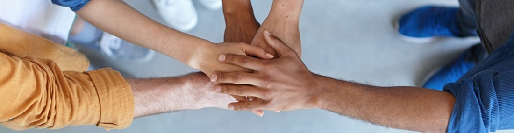

A Lavronorte foi fundada, em 12 de julho de 1977, na cidade de Balsas. Com o objetivo de suprir as necessidades de uma época repleta de desafios em uma região onde antes da sua fundação, era necessário viajar cerca de 1.500 quilômetros para conseguir uma simples peça de trator. Uma empresa familiar, pioneira no mercado de máquinas agrícolas da região Sul do Maranhão. Desde sua criação, a empresa vem investindo na sua estrutura física, pessoal e tecnológica, uma união entre pessoas e ferramentas para entregar soluções em agronegócio, para melhorar a produtividade e rentabilidade dos clientes. A Lavronorte é representante da marca John Deere, a maior fabricante de máquinas agrícolas. A empresa não é uma simples revendedora de máquinas, a concessionária investe constantemente no desenvolvimento de funcionários, planejamento estratégico, tecnologia de informação e principalmente no pós-venda, tudo isso para que o cliente não fique com o seu equipamento parado. A empresa está sempre inovando e estabelecendo novos conceitos de atendimento, com estrutura ampla e moderna, que proporciona maior integração com o cliente. Uma equipe preparada em constante capacitação e equipamentos tecnológicos de última geração. Assim, consolidando sua missão: fazer a diferença na vida das pessoas, contribuindo para o fortalecimento do agronegócio, na nossa área de atuação, de forma sustentável e inovadora. A Lavronorte não faz somente história, é referência de desenvolvimento e que acredita no futuro da região. E por ter acreditado no potencial da região Sul do Maranhão é, atualmente, uma empresa líder, rentável e duradoura. Hoje a área de atuação da concessionária abrange todo o estado do Maranhão e uma parte do Tocantins, as lojas estão espalhadas por várias partes do estado, com sua Matriz na cidade de Balsas - MA e filiais em: Alto Parnaíba - MA, Campos Lindos – TO, Chapadinha - MA, Imperatriz – MA e Santa Inês -MA, todas com instalações modernas e serviços de qualidade para satisfazer as necessidades dos clientes e de toda a região.
Fazer a diferença na vida das pessoas, contribuindo para o fortalecimento do agronegócio, na nossa área de atuação, de forma sustentável e inovadora.
Ser referência em soluções inovadoras para contribuir com a segurança alimentar do mundo.
Valorização das Pessoas
Inovação
Ética & Transparência
Credibilidade
Resiliência
Sustentabilidade